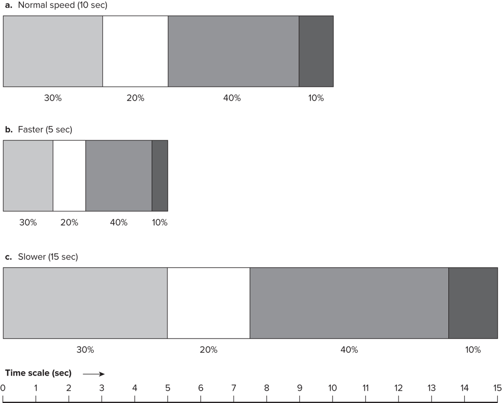
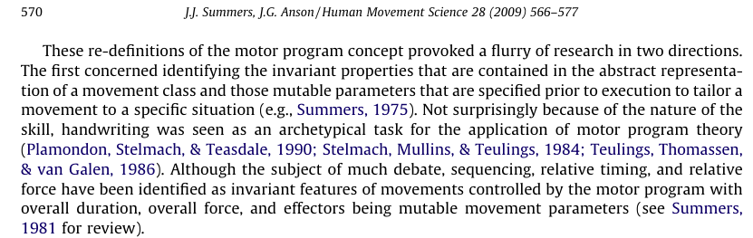
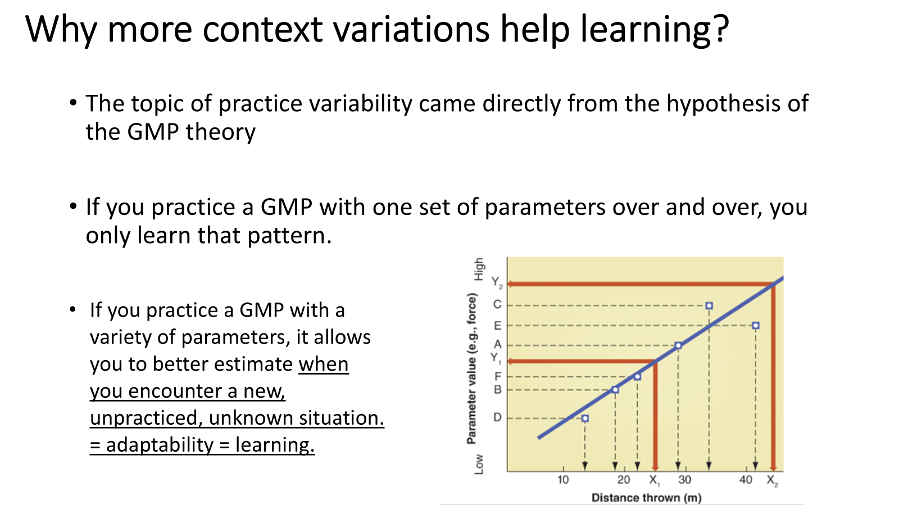

Generalized Motor Programs & Schema Theory
Almost as soon as Keele published his definition of the motor program, a lively debate broke out over its limitations — and that debate led directly to the idea of a generalized motor program.
From a rigid program to a flexible one
Last lesson, we saw that the motor program has some empirical support. But the simple program (Keele’s version) runs into trouble the moment we ask it to handle the variety of real movement. By the end of this lesson you should be able to:
- 1Describe the problems with the simple motor program: storage, novelty, and context-conditioned variability.
- 2Define a generalized motor program (GMP) and explain invariant features vs. parameters.
- 3Explain Schmidt’s schema theory — recall and recognition schemas.
- 4Evaluate how far the GMP + schema account resolves the three problems — and what it leaves open.
Three problems
If every movement needs its own stored program, we run into real difficulties. Open each one — all three to continue.
Open all three to continue.
The storage and novelty problems are discussed in Schmidt, R. A. (1975), Psychological Review, 82(4), pp. 229–230. PDF
Context-conditioned variability: same command, two different movements
Here’s why a motor program can’t just be a fixed set of muscle commands. The role of a muscle depends on the limb’s starting position.
Take contraction of the pectoralis major. Let’s imagine that the brain sends a motor command to this muscle to activate to a certain level (say 60% of max activation). The resulting movement of the arm depends on the angle between its line of pull and the joint axis. Flip each card to see the outcome:
If one command yields opposite movements depending on context, then storing “fixed commands” can’t be enough. The program has to be more abstract than a literal muscle-by-muscle script. That’s the opening for the generalized motor program.
Context-conditioned variability: Turvey, Fitch, & Tuller, in Human Motor Behavior: An Introduction (J.A.S. Kelso, Ed., 1982). Google Books
The generalized motor program
A generalized motor program (GMP) is the memory representation of a class of actions that share common invariant characteristics (Schmidt, 1975).
To address the storage problem, Richard Schmidt (1975) proposed the notion of a generalized motor program (GMP) as an abstract memory structure. Instead of storing a separate program for every individual movement, you store one flexible pattern per class of actions — with slots you fill in differently each time. That single move dissolves the storage and novelty problems at once.
A “class of actions” might be:
to any distance, any ball
lace, inside, outside
any speed or surface
All the throws share something that makes them recognizably “a throw” — even though speed, force, and the arm used all change. That shared signature is the heart of the GMP.
Schmidt, R. A. (1975). A schema theory of discrete motor skill learning. Psychological Review, 82(4), 225–260. PDF
Invariant features vs. parameters
Every GMP has two parts. Read the definition on each card, then flip it for examples — flip both to continue:
Flip both cards to continue.
What stays fixed: relative timing
The single most-studied invariant feature is relative timing — the proportion of the total movement time spent on each part of the action. The key claim: you can change the overall speed (a parameter), and the proportions stay the same.

Relative timing & sequencing
The order of the segments and their proportions — what makes the action recognizably itself. (Relative force and sequencing are also commonly identified invariants.)
Overall duration, force, amplitude, effector
Scale the whole thing faster/slower, harder/softer, bigger/smaller, or run it with a different limb — the proportions are untouched.
A GMP stores a pattern of proportions, not a fixed set of durations. That’s exactly why one program can generate an endless family of movements.
Rhythm vs. tempo
Music gives the cleanest picture of the invariant/parameter split. Rhythm is the sequencing of beats per measure — and it stays the same no matter how slow or fast you play, or which instruments play it. Flip each card.
Rhythm → relative timing (invariant feature). Tempo → overall duration (a parameter). One stored pattern, endlessly re-parameterized.
Your signature is one GMP
Here’s a quick way to feel the invariant features of your own GMP for signing your name.
Grab a piece of paper and a pen. Write your name three ways:
1 · small, then large • 2 · slowly, then quickly • 3 · with your dominant, then non-dominant hand.
Now compare them. The size, speed, and the muscles used all changed — yet each is still unmistakably your signature. What stayed the same? Those are the invariant features; what you varied are the parameters.
The toggles below simulate the same idea — watch the relative timing stay fixed as the parameters change:
Some invariant features here are the relative timing of writing each letter. For example, the letter “a” is typically written in two strokes (the circle, then the tail) — and their relative timing stays roughly constant: about 60% of the time for the circle, 40% for the tail. Another invariant is the shapes of the letters themselves. The size, speed, and effector (which hand) are just examples of parameters you reset. This is one example of a GMP.
Handwriting as a model for motor programming: Teulings, H.-L., Mullins, P. A., & Stelmach, G. E. (1986). The elementary units of programming in handwriting. In Advances in Psychology (Vol. 37, pp. 21–32). North-Holland. · Plamondon, R., Stelmach, G. E., & Teasdale, N. (1990). Motor program coding representation from a handwriting generator model: The production of line responses. Biological Cybernetics, 63(6), 443–451. Springer
One GMP for all your throws
Overarm throwing can be done at countless angles, speeds, and amplitudes, with different objects — yet GMP theory says this entire class is represented by a single program.
Relative timing
The relative timing of the arm/shoulder muscle activations — the proportional sequence that makes it a “throw.”
Duration, force, amplitude, limb
Overall movement time, force, amplitude, and the effector (left vs. right arm) — dialed to the situation.
A soft lob to a child and a hard throw to home plate are the same GMP with different parameters — not two separate stored programs. In this example, the GMP solves the storage problem: you keep one program instead of a program for every possible throw.
A new research program
Redefining the motor program as a generalized one did more than fix problems — it set an agenda. It provoked a flurry of research in two directions: (1) identifying the invariant properties contained in the abstract representation of a movement class, and (2) pinning down the mutable parameters specified just before execution.

Sequencing, relative timing, relative force
The abstract “signature” of a movement class — what’s stored.
Overall duration, overall force, effectors
The dials set just before each performance.
Summers, J. J., & Anson, J. G. (2009). Current status of the motor program: revisited. Human Movement Science, 28(5), 566–577. https://doi.org/10.1016/j.humov.2009.01.002
First, what is a schema?
A GMP needs a way to choose the right parameters for each new situation. Schmidt’s (1975) answer is the schema — a rule, built from past experience. The idea didn’t start in motor control at all: it was first proposed in psychology to explain perception. Flip each card below.
Hold onto that: a schema lets you handle a novel instance by applying a learned rule. Next, we apply exactly this idea to movement.
The motor response schema
In motor control, the schema is the rule that tells a GMP which parameters to use. Schmidt (1975) splits it into two complementary parts:
Recall schema
Picks the parameters for the GMP, based on past experience: “to throw this far, use about this much force and duration.”
Recognition schema
Compares the actual sensory feedback with what was expected given the chosen parameters — both during the action (does it feel right as it unfolds?) and after it (did the outcome match?), then updates the rule.
It works on two levels: (1) during the task — how the sensory feedback feels moment-to-moment versus what was expected for the parameters chosen; and (2) after the task — how the outcome relates to the expected outcome. Each attempt stores the link between the parameters used, the sensory consequences, and the outcome, building a reliable rule that generalizes to new situations — just like the “dog” schema.
Schmidt, R. A. (1975). A schema theory of discrete motor skill learning. Psychological Review, 82(4), 225–260. PDF
Schmidt, R. A. (2003). Motor schema theory after 27 years: Reflections and implications for a new theory. Research Quarterly for Exercise and Sport, 74(4), 366–375.
The two schemas in action
Let’s consider how the two schemas are used according to Schmidt’s theory, in a real skill: a basketball player taking a free throw from an unfamiliar distance (say, a longer college line they’ve never shot from). They already have a GMP for shooting — the invariant relative timing of the shot. What has to be decided is the parameters.
-
1
Read the situation. The shooter perceives the desired outcome and the current conditions — the distance to the hoop, the ball’s weight, their own fatigue.
-
2
Recall schema selects the parameters. Drawing on past shots at other distances, the recall schema estimates the force and overall duration needed for this never-practiced distance — interpolating from the learned rule. These parameters are fed into the shooting GMP.
-
3
Execute. The GMP runs with those parameters — the shot goes up. For a fast, ballistic action like this, most of it runs open-loop.
-
4
Recognition schema evaluates the result. The shooter compares the expected sensory consequences (“how it should have felt”) with what actually happened and the outcome (short? long? swish?). The ball lands two inches short.
-
5
Update the rule. That error refines both schemas, so the next shot from this distance uses slightly more force. Repeat, and the rule sharpens — that’s learning.
Recall schema → set parameters → GMP executes → recognition schema → update. Every practice attempt tightens the rule that lets you handle the next novel shot.
Which problems does GMP + schema fix?
The GMP + schema account makes real progress — but it’s a mixed scorecard.
Storage
Each GMP only needs to store the invariant features plus a rule for setting parameters — one program per class of actions, not a separate program for every movement. The storage problem goes away.
Novelty
For a movement that belongs to a GMP you already have, the recall schema sets new parameters — so a never-practiced throw is fine. But how a totally new GMP first emerges is still not clear. One indication is that it involves variable practice conditions (next page).
Context-conditioned variability
The GMP + schema idea doesn’t really solve context-conditioned variability — the problem that the same command produces different movements depending on body position and context. That challenge pushed later theorists toward dynamical-systems accounts of coordination (a topic for later in the course).
Implications for learning: variable practice
Schema theory makes a strong, testable prediction about how to practice. If the recall schema is a rule built from experienced parameter–outcome pairs, then practicing many different parameter combinations should build a stronger, more general rule than drilling the same movement over and over.
One parameter set, repeated
You get very good at that exact movement — but the schema stays narrow.
Many parameter sets
You sample the whole relationship, so you can better estimate parameters for a new, unpracticed situation — that’s adaptability, and that’s learning.

Yes — and we saw it earlier in the course. Shoenfelt et al. (2002) had participants practice basketball free throws under constant vs. three variable conditions, then tested retention from the free-throw line. The variable-practice groups improved as much or more, even though they never drilled the exact test shot.
Shoenfelt, E. L., Snyder, L. A., Maue, A. E., McDowell, C. P., & Woolard, C. D. (2002). Comparison of constant and variable practice conditions on free-throw shooting. Perceptual and Motor Skills, 94, 1113–1123. · We’ll return to variable practice in depth in the motor learning modules.
Invariant feature or parameter?
For each one, decide whether it’s part of the GMP’s stored invariant features or a parameter you set each time. Answer all four to continue.
0 of 4 classified
Classify all four to continue.
A pitcher throws the same type of pitch harder to second base than to first. In GMP terms, what changed?
Answer to continue.
The whole arc, in one view
- 1Lesson 1 — open- vs. closed-loop control: does the movement use feedback?
- 2Lesson 2 — the simple motor program: structured before, runs without feedback.
- 3Lesson 3 — the empirical support for motor programs (Wadman, Taub, Slater-Hammel, StartReact, CPGs).
- 4Lesson 4 — the GMP + schema theory: one flexible program per class, parameters set by learned rules.
A skilled mover doesn’t store a million movements. They store a handful of generalized programs and a set of rules for tuning them — and practice sharpens both.